Buses & VCAs
This page describes how to send a path to a bus or assign to a VCA. More information about the different bus types can be found in the Console Configuration section.
- Channels can send to Stems, Auxes and Masters.
- Stems can send to other Stems, Auxes and Masters.
- Auxes can send to Masters. They cannot send to Stems or other Auxes.
- Masters cannot send to Stems, Auxes or other Masters.
Sends to Stems and Auxes have an In/Out control as well as level contribution.
Sends to Masters/VCA assignments only have an In/Out control, they do not have level contribution.
Sends can be adjusted in 4 different ways:
- Using Query
- From the Detail View
- From the Channel View & Quick Controls
- From the Control Tile
Using Query for Bus Routing/VCA assignments
Sends can be configured quickly and easily using SSL Live's handy look-up feature, Query. First, use Query Assign to route to the bus/assign to a VCA. Then use Compressed or Expanded Query modes to adjust the send level.
Query Assign
Query Assign can be used to quickly assign paths to the Queried path.
Press & hold a path's Q button to enter Query Assign. Now use the SELECT buttons of other paths to turn them on or off to the Queried path.
While in Query Assign, the Q button of the Queried path will flash purple. The Control Mode will match what has been set for that path type.
Press the Queried path's Q button again to exit Query Assign.
Tip: It is also possible to select a range of paths by holding down the SELECT button of the first path then pressing the last path's SELECT button. All paths on the Fader Tile between these two will be selected. It is also possible to Range Select across more than one Fader Tile.Adjusting Sends Using Query
Press the Q button once on a path. All of the buses the path is sending to, paths that are feeding the path and any VCAs the path is assigned to will be displayed.
Please Note: Depending on the Query Mode, the contributions will either be displayed as the only paths on the other tiles (Compressed), or using the Q button light colours to show those paths feeding to the Queried path (green) and being fed from the Queried path (red) (Expanded).If the Query Control Mode is set to Quick Controls, the Quick Control encoders on the tiles displaying the contributions can be used to raise or lower the send level.
If the Query Control Mode is set to Faders, the faders will have automatically flipped when you pressed the Q button and the faders can now be used to raise of lower the send level.
To learn more about Query and Query Modes please see the Query page.
Routing to buses/Assigning to VCAs from the Detail View
Open the Detail View and tap on the Stems, Auxiliaries, Masters or MG + VCA page.
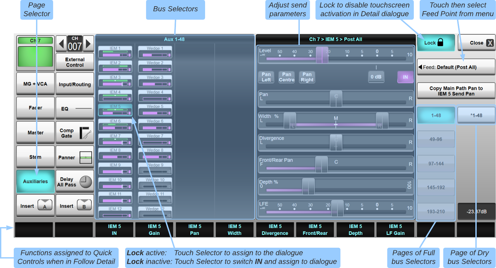
Buttons for all buses of that type will be listed in the left half of the page. If there are more buses than can be displayed at one time, use the numbered buttons in the right edge of the page to select which page of buses is shown.
The Lock button in the top right of the page defines what happens when a bus is touched:
- If Lock is on, the bus/VCA is assigned to the Quick Controls
- If Lock is off, the bus/VCA is assigned to the Quick Controls and the send is turned in or out
When a bus is selected, sliders for any available parameters are shown in the right half of the screen. These can be dragged with a finger on the touchscreen or adjusted using the Quick Control assignments beneath the relevant labels at the base of the screen. Only controls relevant to the selected bus will be shown, e.g. if the bus has been set to Follow Pan (see below) then no Pan controls will be shown, or if routing from a mono channel to a stereo bus with Follow Pan disabled then only the Left/Right Pan control will be visible.
Press the IN button (or the upper Quick Control button) to switch the send in and out.
Press the 0 dB button to set the send level to 0 dB.
Use the Pan Left, Pan Centre and Pan Right buttons to quickly set the send's Pan settings.
Use the Copy Main Path Pan to [Bus] Send Pan to copy the path's pan settings to the selected bus send pan section (applied only when the selected bus is not set to Follow Pan, else the main path pan is used). Path Link can be used to copy multiple path's Pan settings to the selected bus. See also the Copy Send Pans from Main Path Pans feature below to copy on a entire bus basis.
Note: IN is the only control that is displayed in the right side of the dialogue when configuring Sends to Master buses.You can choose the selected feed point for this send by touching the Feed: button below the Lock button, and selecting the source from the menu which appears. The options are as follows:
- Sends to Master Buses: Default, Post Fader (before any processing elements which have been placed after the fader) and Post All (after any processing elements which have been placed after the fader);
- Sends to Auxiliaries: Default, Pre Fader and Post All;
- Sends to Stems: Default, Pre Fader, Post Trim, Post Insert A, Post Insert B, Post Fader, or Post All
Bus sends that are fed from before the channel's fader (Post Trim, Pre Fader or Post Insert A/B if the insert point is before the fader in the channel's processing order) have an indicator to the left of the send level:
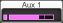
Bus sends that are fed from after the channel's fader (Post Fader, Post All or Post Insert A/B if the insert point is after the fader in the channel's processing order) have an indicator to the right of the send level:
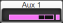
The status of Bus Selectors is indicated as follows:
Masters/VCAs: |
Stems and Auxes: |
||
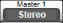 |
Bus is unselected and switched out; | Bus is unselected and switched out; | |
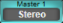 |
Bus is assigned to Quick Controls and switched out; | 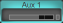 |
Bus is assigned to Quick Controls and switched out; |
| Bus is assigned to Quick Controls and switched in; | 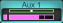 |
Bus is assigned to Quick Controls and switched in. The bottom half of the Selector shows its level. The top half shows panning information if applicable. | |
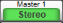 |
The bus is unselected and switched in. | ||
The Mute Groups and VCAs Detail View page looks slightly different but the functionality is the same; tap the buttons to assign the path to Mute Groups and VCAs.
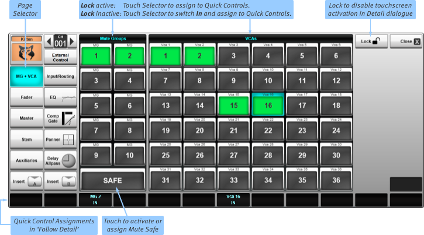
Routing to buses/Assigning to VCAs from the Channel View & Quick Controls
To map the bus send to the Quick Controls, go to the Channel View, tap on a bus assign button (Master, Stem or Aux) and then tap on the bus:
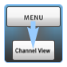
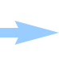
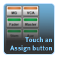
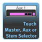
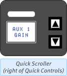
You can view which bus is currently mapped to the Quick Controls by checking the Quick Control label display in the top right of the Fader Tile.
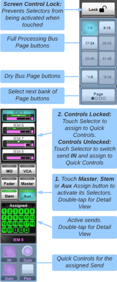
Bus selectors for all buses of that type will be listed below the channel meters. If there are more buses than can be displayed at one time, use the numbered buttons in the right edge of the screen (shown right) to select which page of Selectors is shown.
The Lock button in the top right of the page defines what happens when a bus is touched:
- If Lock is on, the bus is assigned to the Quick Controls
- If Lock is off, the bus is assigned to the Quick Controls and the send is turned in or out
The controls available for each send type are as follows:
Masters
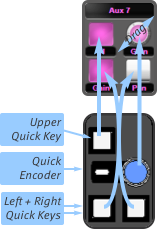
The upper key toggles send in and out. There are no other controls because Masters do not have level contribution.
Stems & Auxes
- The upper key toggles the send in and out.
- Pressing the rotary encoder changes the function of the lower right button between Pan, Width, Divergence, Front/Rear, Depth and LF Gain.
- In gain/pan, the left and right keys switch the encoder between Gain and Pan respectively.
The quick display (labelled Assigned) lists the routes from the channel to all buses of that type.
To select a different bus, simply tap on another bus in the Channel View on the Main Screen.
Alternatively, the ▲/▼ buttons above the Enter button can be used to scroll within the bus path type, by first activating the Enter button on the Fader Tile. A brief press of the arrows navigates through the list. Holding an arrow will jump up or down by eight buses, allowing for fast navigation. Turning off Enter exits you from the paths and back to the other assign functions.
The indicator in the bus button is off when the channel is feeding no buses of that type, and green when it is feeding at least one bus of that type (orange for VCAs).
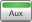
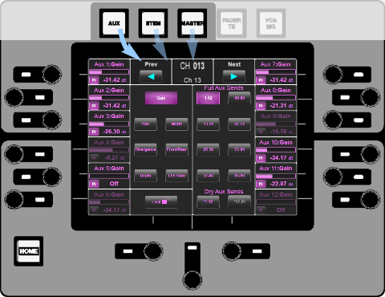
Routing to buses from the Control Tile
Control of channel sends to Stems and Auxes, and bussing to Masters, is available via the Control Tile.
Press the Aux, Stem, Master or VCA MG button above the Control Tile Screen:
The page and parameter buttons in the middle of the screen define what is assigned to the encoders down either side.
Buttons which are available are shown with blue labelling; buttons which aren't relevant are shown with grey labelling; the active buttons are lit blue.
Select which page of twelve sends is active using the page buttons towards the right;
Select which parameter is assigned to the rotary encoders using the Parameter buttons towards the left.
The parameters which are available will depend on the formats of the channel and bus in question.
The rotary encoders down either side of the screen can then be used to alter the selected parameter for the bus indicated in the screen area nearest to them. Sends can be switched on and off by pressing on the relevant encoder.
All on-screen buttons can also be controlled by touching the screen.
Follow Pan
You can define whether or not sends to Stems or Auxes follow the channel Pan using the Follow Pan button in the Eyeconix page of the Aux or Stem's Detail dialogue.
When Follow Pan is off, Pan controls are added to the send controls in the sending channel's Detail Dialogue for that Aux/Stem. Only the Pan controls relevant to the combination of source channel format and Aux/Stem format will be available.
Note: Turning Follow Pan on or off may result in a change to the panning settings applied from the source path to the bus.Copy Send Pans from Main Path Pans
When Follow Pan is disengaged, the pan settings for each path onto the selected bus will act independently to the path's main pan controls. The independent per-send pan parameters default to unpanned. However, the send pan settings from each path to the selected bus may be copied from the main path pan settings by pressing & holding the Copy Send Pans from Main Path Pans button. This has the same effect as pressing the Copy Main Path Pan to [Bus] Send Pan (described in the Detail View section above) on every single source path to the bus.
Follow Mute
By default, all Stem and Aux sends are muted by the channel Mute button, regardless of whether they are pre-fade (and therefore pre-mute) or post-fade. To leave pre-fade sends unmuted when the channel Mute button is on, deselect Follow Mute in the Aux/Stem's detail dialogue.
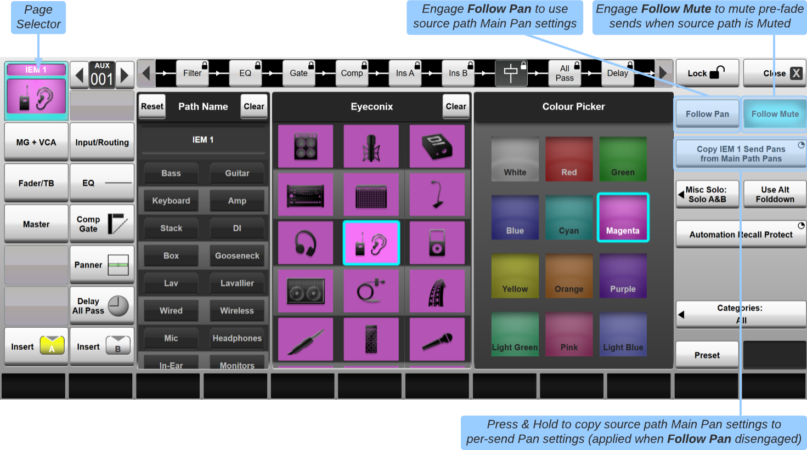
VCA Control of Bus Send Levels (V-Aux & V-Stem Controls)
V-Auxes and V-Stems provide an efficient way of making mix adjustments to groups of channels from VCAs. Adjusting a V-Aux or V-Stem send from a VCA path will trim sends to the Aux/Stem from all paths that are members of that VCA.
For example, a 'Drums' VCA might contain 10 channels (Kick, Snare, Hi-Hats etc.). These channels are routed to a monitor mix using Aux 1 and initial send levels are set to achieve a good balance. Setting the Aux 1 send of the Drum VCA to -3 dB will attenuate the level of all 10 member channels contributing to Aux 1 accordingly, while maintaining their relative levels.
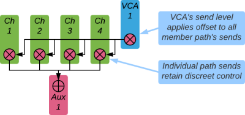
The Aux and Stem bus indicators in the Channel and Detail Views show both the path's discrete level and the level with the VCA offset applied. The magenta/dark blue bar indicates the discrete ('local') Aux/Stem send level of the source path to the bus.
If the VCA portion of the send level is positive, a light cyan bar is added to the end of the local Aux/Stem level bar. The end of the combined bar indicates the overall level.
If the VCA portion of the send level is negative, a dark cyan bar is subtracted from the local Aux/Stem level bar. The end of the lighter local Aux/Stem level bar indicates the overall level.
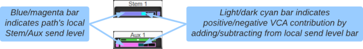
The VCA contribution to a mix can be automated using the Stem and Aux columns for VCA paths in the Automation Filters page.
Using VCA Query to adjust mixes
Querying a mix or path ordinarily results in the VCA faders controlling the VCA master level on the console surface. However, enabling the VCA Control option for the relevant bus type in the Surface options (Menu > Setup > Options > Surface tab) will enable control of bus sends from the VCA's fader (if the bus is set to Query on Faders mode) or Quick Control encoder (if set to Query on Quick Controls mode).
Note: V-Aux and V-Stem sends from VCAs have no feed point options; they are 'virtual' controls and simply provide an offset to the send levels of the audio paths assigned to the VCA, at the feed points defined in each path. V-Auxes and V-Stems are always IN.Locking V-Aux and V-Stem contributions
It is possible to lock V-Aux and V-Stem contributions so that they cannot be changed, e.g. if they should always remain at 0 dB. This option is accessed in the User options page and is stored in showfiles.
Note: This option is enabled by default, even if loading a show from an older version of software.Useful Links
RoutingDetail View